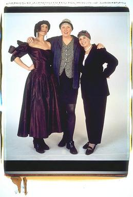
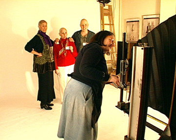
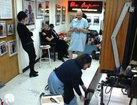
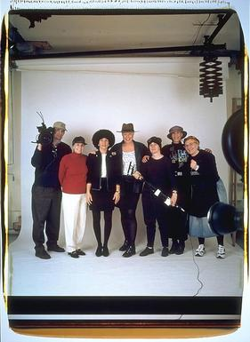
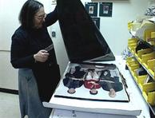
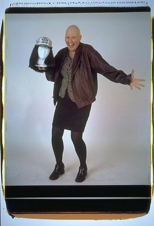

| <Dedication | Pizza> |
 Elsa there were seven of us and two cameras. Debbie Dorsey, Carol Potoff and Libby Levenson were the three stars. Bob Burns, Debbie's husband and a film maker, shot video. He worked with Terry Rockefeller who did sound. I shot with the Polaroid 20 x 24. Debra Ciolfi, Debbie's longtime friend, was an extra pair of hands. None of us knew what was going to happen. We were all here because Debbie, a film maker and film editor I'd met when I'd pho- tographed her a few years ago, had called me out of the blue. She said she had been diagnosed with breast cancer, was going through radiation, and wanted to do something to take her mind off what she was going through. She won- dered if I had any ideas. It didn't take long to come up with a plan. I would take some portraits of Debbie and Bob Burns would film the session. Debbie said she had two friends she had made while figuring out the chemo world, Libby Levinson and Carol Potoff, who also would be up for the portrait-making. Libby is an administrator at a computer publishing com- pany and Carol is an artist and high school art teacher. We picked a shoot date, March 12, 1998, when I would meet Libby and Carol for the first time. I knew I wanted hope in the pictures. I didn't want shame and I didn't want fear. I wanted fun. I wanted daring. Not just daring the cancer but daring the camera to work. No break- downs. I had done portraits of people who knew they were dying, portraits of people who hoped they weren't dying. Four portraits of young mothers with breast cancer and their families. Friends with aids. They were all with me during the No Hair Day shoot. The first thing we did on the day of the shoot was order pizza and soda from Il Panino down the street and look at the props I'd asked the women to bring. Debbie, Carol and Libby had brought hospital night- gowns, chemo vials, food coloring, books about breast cancer, glamorous dresses, baseball caps, turbans galore, wigs. And we talked and talked. I hadn't seen Debbie and Bob Burns in seven years. They had been given a wedding present of a portrait by me from friends and had finally used it when their son Bobby was eighteen months. Now they also have a little girl, Georgia. Libby had come with her patient id number, cardboard and a color marker. She had the sense that the pictures probably had to be depressing, and wanted to hold her id number across her chest, like a person in prison. She wanted to wear an ugly, shapeless nightgown. But I didn't want to make a portrait in which she looked ugly or angry or down. So I began by taking a portrait of where we were: eating pizza. One image led to another. Because I work with the Polaroid 20 x 24 camera we could see the photo 70 seconds after I clicked the shut- ter. There it was in all its clarity and color and dramatic size: 23 x 36 inches. We got more and more excited. The little miracles thrilled us; the camera worked; no one blinked, I didn't forget to pull down the negative. Absolutely nothing went wrong. Libby, who'd had a complete mastectomy, Carol, who'd had a partial mastectomy and reconstruction, and Debbie, who'd had a lumpectomy, became increasingly frank and daring in front of the camera. Bob Burns and Terry Rockefeller were documenting our every word and every move, adding to our energy. Occasionally, they would ask us questions on camera. As I pinned up each sequential picture on my studio board so that we could examine it, we came up with the next pose simultaneously. We were all on the same wave.
{kind=link}
Bob Burns Debbie losing her hair was so very traumatic. I can't tell you how many times we were lying in bed talking about how difficult it was for her to lose her hair and to be bald. Being bald makes it impossible for you to ignore that you have cancer. You can't put it aside. You can't pretend that you don't. You just do. Seeing Debbie---in those photographs and especially where she's holding up the wig and smiling at the same time with such a great laugh---was great. It was hard for me to hold the camera still. Debbie kept talking about wanting to make a tv show, a tv show about having cancer. And I kept putting it off, not wanting to do it, not being that interested in it. But when she actually called Elsa and made this thing happen, then I said, Jeez, something special could happen there. Let's just go and shoot it. We didn't even really know we were going to do it till the day of the shoot, you know, the kids weren't sick so they were going to go to school, and I didn't have another job that day, I had nothing else I had to do. And all the equipment was working. So, yeah, let's do it. Frankly, I did it partially as a way of helping myself deal with it. Debbie deals with things by talking about them again and again and again and again. I'm a guy. I talk about things once or twice, and then, you know, I'm done. Making a project out of it, making a film is a way, in one sense, of dealing with it. Debbie's brush with death focused me on the notion of death, too. But it's something as a society we deal with badly, and we need to do better. We need to take that and make death present every day, because it really is always there, and it doesn't have to be such a thing to be scared of. If you know that it's there every day. . . . The light could fall down on me, and I'd be dead. That's not likely, but it's there. And if I know that the light can fall down on me and I would be dead, then I can say, just say what I'm feeling and not worry about it, because it might be the last thing I ever say.
Carol talks about Elsa Elsa is so down to earth and she seems to enjoy the shoot as much as we did. Here she is, wrapped in her head dress. We tied her head up, you know, wrapped her head too. Oh she was lovely. . . it was so sweet of her to do that. It really boosted my spirits. What a crew! Are we gorgeous or what? I don't know, I expected some hotsie totsie photographer person and there was Elsa, this short Jewish woman, and I thought, wait a minute, that's not anything like I expected. It was great. I think she really catches a slice of life. She takes the picture and whatever the camera catches, it catches. You know, there's no polising it up or making any changes. What you see, what's there, is what you get. That's it, boom, done. You got your eyes closed? Well that's how it comes out. Whatever---it's there. There's an honesty to her work that you don't get elsewhere.
|  |  |
|  |
{kind=link}
{kind=link}
{kind=link}
 Debbie One day Carolyn Krusinski came over and told me that I should call the artist who took the large Polaroid of my family and ask her to take my picture bald. I laughed and thought, why not. Elsa answered the phone and I said Elsa you don't remember me but you took my picture with my husband and son about seven years ago. My name is Debbie Dorsey. She said oh I remember you. Then I said Elsa I'm going to give you a gift. I'm going to give you three bald women who are undergoing chemotherapy for breast cancer. You should take our picture. There was a pause and then Elsa said cool, let's do it. I'm not busy in the winter. I called Libby thinking she would never want to do it. But when I told her that Elsa wanted to take our picture she jumped on it. Libby and I talked for hours about how we were never comfortable enough to go without a wig. When we went to chemo chic with a scarf and a baseball cap, we thought we were really daring. Then I called Carol who said why not. I've had cancer. I can do anything. Carol never wore a wig, and most of the time she didn't wear anything unless it was cold. Being an artist, Carol really got into what we should bring. She gathered gowns, dozens of scarves and material for turbans. Her favorite color is purple. Before the shoot at Elsa's, Libby and I visited Carol on her last day of a hospital stay because her white blood cells had dropped too low. I said that if we were going to do the photographs with Elsa we had better get used to the three of us being bald. So we all crammed into Carol's bathroom and Libby and I took off our wigs. We each looked at each other's bald head and started laughing. Carol had a little hair that was pretty dark so she didn't look too bad. Libby was bald except for little strands of hair here and there. She called them her porcupine hairs. I was shocked because it was the first time that I realized how bald I really was. We compared the amount of hair we didn't have. We examined the shape of our heads.
{kind=link}
| <Dedication | Pizza> |
Find Elsa's Books


Please change your links and bookmarks to elsadorfman.com!
Elsa thanks her cybergodmother, photo.net, her longtime, most generous host at furfly.com, and her current web host Mike Sisk at TCP/IP Ranch, LLC.
Copyright 1970-2010 © Elsa Dorfman.
Inquiries for the use of Elsa's content are welcomed!
Please
read these guidelines.
Contact
Elsa Dorfman via email or send Website Feedback to her webmaster.